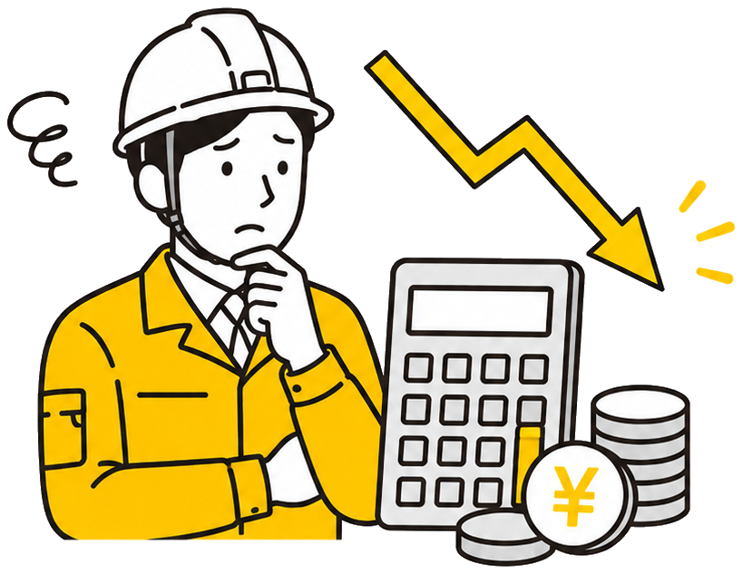
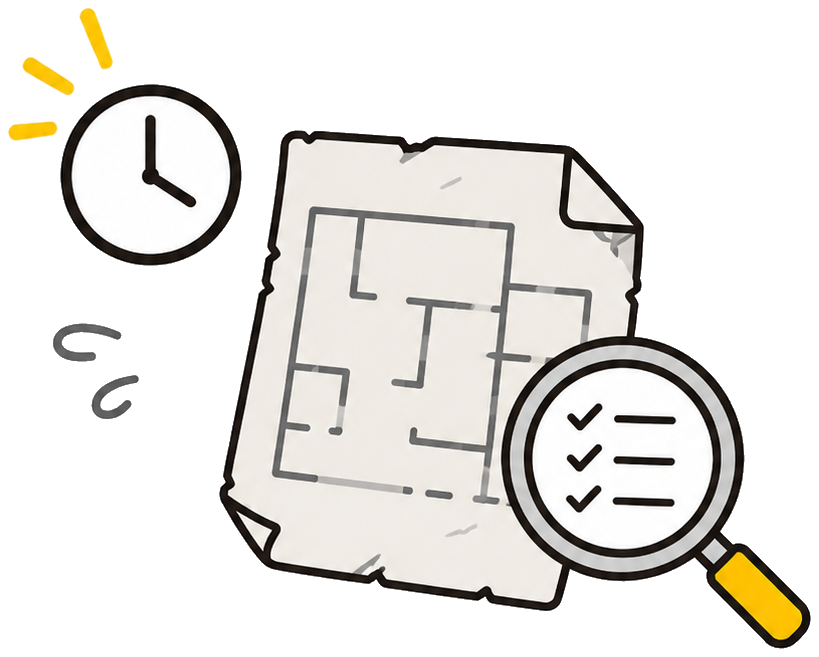
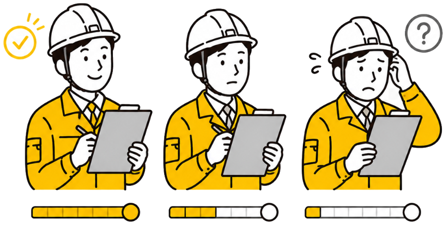

About Astro
アスベスト事前調査のすべての工程を、根拠あるAIとワンストップで効率化します。
3工程を1つのサービスで完結。図面解析の結果は目視調査に、目視の結果は報告書に、そのまま引き継がれます。転記の手間もミスもありません。
判定には、石綿DB・メーカー資料に基づく根拠とリスクレベルを必ず併記。なぜその判定なのかがその場でわかり、最終判断を下す有資格者を支えます。
事務所ではPC、現場ではスマホ。同じ現場データにどこからでもアクセスでき、電波のない現場でもオフラインで撮影・保存できます。
Experience
工程を選ぶと、実際の操作画面をご覧いただけます。
その調査対応
書面調査
目視調査
報告・申請
調査対応が増えて、すぐに工事へ入れない…
現場監督 ｜ 解体工事会社
古い書面で採取数の確認に時間がかかり、見積提出が遅れる…
営業担当 ｜ 解体工事会社

調査・分析・報告書作成のコストが利益を圧迫…
経営者 ｜ 建設・リフォーム会社
図面がない・古い・現況と違うため、確認作業が膨大…
調査担当者 ｜ 調査会社

担当者の経験差で調査品質が安定しない…
調査部門責任者 ｜ 調査会社

これらの課題を
図面の書き起こし・DB照合から報告書作成までをAIが自動化。
調査時間だけでなく、分析依頼にかかる費用まで削減します。
調査にかかる時間
これまで
Astro
導入後
書面調査の作業時間を
90%
削減 2日 → 30分
報告・申請の事務作業
95% 削減 ｜ 5時間 → 15分
書き起こし・照合・報告書づくりの手作業がなくなる
1現場あたりのコスト
約29.5
万円
約15.3
万円
調査コストを
約48%
削減 29.5万 → 15.3万円
分析依頼の検体数
10 → 5 検体 ｜「みなし」で削減
検体数を絞り、分析依頼料と待機コストを抑える
※ 月間9現場・1現場8検体の解体業者モデルでの試算（人件費 日当2万円・分析依頼料 1検体3万円で算定、Astro月額利用料は含みません）。
※ 導入効果はお客様の現場条件により異なります。
Astroが出すのは、数字の根拠まで示せる見積。
発注者への説明がそのまま提案力になります。
御 見 積 書
○○建設 株式会社 御中
件名：△△ビル解体工事に伴うアスベスト事前調査
見積No. 26-0719
2026年7月19日
御見積金額
¥384,000
（税抜・最大検体数での御見積）
※ 検体数は書面調査の結果により確定します。 ※ 出張交通費は別途申し受けます。
POINT
1
石綿DB照合の結果から採取が必要な建材を特定。「なぜこの本数か」まで説明できます。
POINT
2
国の石綿DB 44分類・2,151件とメーカー資料に基づく裏付けを、見積と一緒に提出できます。
POINT
3
従来2〜3日かかった見積準備が当日に。スピードと根拠の両方で失注を防ぎます。
義務化後の調査を
AIで効率化
導入企業が語る
コスト48%削減の実践法とは？
田中 太郎
Astro プロダクトマネージャー
8.27 木
14:00-14:40
ウェビナー・お申込み受付中
参加お申込みはこちら ›